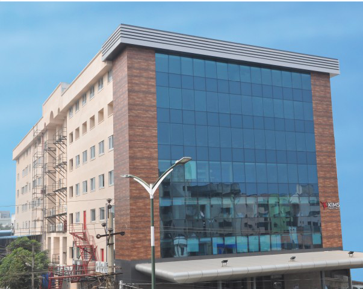

Krishna Institute of Medical Science Limited
An ISO 9001 - 2015 Certifide Hospital
Dargamitta, Nellore - 524003
☎ 2312777, 2317805, 2315835, 36, 37, 38.
📠 0861 - 2302164
✉️ Kimshospitalsnellore@yahoo.com 🌐 www.kimshospitals.com
NEUROSURGERY CASE SERIES
Dr.C.Uday Kiran Katari
M.S., M.Ch.,
Consultant Neuro Surgeon
Reg.No.57433
Brain & Spine Surgone
Ex.Asst.Professor (SVIMS)
FICV (Japan)
NEURONAVIGATION GUIDED
TUMOUR EXCISION
Dr.C.Krishna Mohan
M.S., M.Ch.,
Consultant Neuro Surgeon
Reg.No.57433
Brain & Spine Surgone
Ex.Asst.Professor (SVIMS)
FICV (Japan)